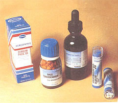
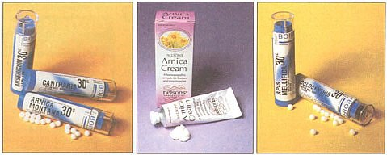
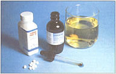

HERBAL REMEDIES
Making a separate peace with illness.
Most country folks are comfortable using medicinal herbs to maintain the health and wellbeing of themselves and of their animals. After a lifetime of living in the city and three years of owning an herb and health-food shop, it was living independently that taught me that I had to radically rethink the way my family practices medicine.
We finally moved to the land in January, 1997. I began studying homeopathy a few months later and had to rely on my scant knowledge of it within weeks.
For starters, our first goat developed mastitis when her twin billys were weaned and sold. Since the reason we had a goat was for the milk, the infection was ruining both the goat's health and our nutrition. Several tubes of the antibiotic the vet had me squirt up into each nipple did little to cure her. Rather than try another trip to town and another round of the medication, I resorted to herbs and homeopathy for a few days. After trying capsules of Echinacea, Rishi, and Astragalus, I finally found that tiny white tablets of Pulsatilla seemed to get her over the mastitis almost miraculously.
Then, one hot July evening, we were moving bricks when my daughter, decked out in her swimsuit and hiking boots but sans the leather gloves I had suggested, was stung by a small scorpion. While the remedy Apis Mellifica is commonly suggested for bites and stings of insects and may quell anaphylactic reactions, Lachesis is a more specific remedy for scorpion stings. I had some on hand, gave her one tablet every twenty minutes for an hour, and had her soak her hand in a basin of cool water with a couple of ice cubes in it. Within forty-five minutes, the swelling and pain were gone and the color had returned to normal where she had been bitten. She had no further complaints but did agree to wear gloves in the future. Both one billy kid and my daughter, who came down with food poisoning on one town trip, have benefited from a few tablets of Arsenicum. They overcame bouts with diarrhea in record time.
When the alternative could be a sixty mile round-trip drive to the nearest clinic, vet, or doctor, homeopathy is a valuable asset in the arsenal of every homesteader, both of the two-legged and four-legged variety. Developed in the early 1700s as a therapeutic system of medicine by Dr. Samuel Hahnemann, a German physician, homeopathy quickly spread through Europe to India and west to America in 1850. In the 1800s and early 1900s, four out of ten doctors in the U.S. were trained homeopaths, and there were over one hundred homeopathic hospitals. To this day, the Royal Family in Great Britain relies upon homeopathic physicians.
During the 1918 Spanish flu pandemic that killed twenty-two million people worldwide and half a million in this country, the homeopathic remedy Crolatus Horridus, or rattlesnake venom, was responsible for saving the most lives. Medical archives reveal that Crolatus was the remedy of choice given to homeopathic patients, along with Gelsemium and Belladona. It is interesting that in that epidemic, eighty percent of patients treated with allopathic drugs died. Eighty percent of those treated with homeopathic remedies lived.
However, the development of wonder drugs such as penicillin and advances in medical technologies pushed this gentle but effective healing method into the background. Still, homeopathy is more widely used worldwide than our system of allopathic medicine, and is coming back into favor in this country. Homeopathy is based on the philosophy that "like cures like." By using minuscule or very diluted amounts of a substance that, in its whole, raw form, would make us ill, we can quickly bring into play the body's own defenses to overcome a challenge.
There are over two thousand remedies in the Homeopathic Pharmacopoeia, all taken from nature in some form or another. Most are from vegetable, animal, and mineral sources, and are broken down into minute quantities to stimulate the patient's own defense and immune functions. This is the only type of medicine in the world that activates the immune system with virtually no damaging side effects or risk of negative reactions. In a process known as trituration, the ingredients for a remedy (the curative substance along with lactose or sucrose) are mixed and prepared in FDA-approved homeopathic pharmacies in the U. S. They may then be sold to anyone, without a prescription, and are considered over-the-counter preparations in both this country, Europe, and other parts of the world. The amount of the original substance in a homeopathic medicine is indicated by a number and the letter X, C, or M. For example, a 3X potency means there is one part of the remedy with nine parts of mills lactose or sucrose. The lower the number, the lower the dosage; the C and M range are considered high dosages and should be administered only by a homeopathic doctor or lay practitioner. Remedies are available in liquid or tincture form, and as tablets or pellets. These may be dissolved under the tongue in a clean mouth fifteen to thirty minutes before and after eating or drinking anything other than water or brushing the teeth.
Homeopathic remedies are very inexpensive: a vial of a hundred tablets retails for under six dollars. Turn the page for a basig homeopathic first-aid kit.
If you could have only a half dozen or so homeopathic remedies on hand for minor emergencies (for two- or four-leggeds), the following should be considered:
Apis: Apis Mellifica, made from honeybee venom, is useful when there is sudden swelling of body tissue following an insect sting, particularly bee or wasp. It is also a remedy for food-allergy reactions, sunburn, or swelling of incision sites after surgery.
Arnica Montana: A very broad-based remedy, Arnica's sphere is usually muscle injuries but it also works particularly well on injured tendons, ligaments, and inflammation around joints and bones. It is a premier remedy to help control bleeding, from acute nosebleeds to hemophilia. Keep it on hand as a follow-up medication for fractures (Ledum followed by Symphytum may also aid in recovery and knitting of bone), shock, and wasp stings.
Arsenicum: Essential to have on hand for diarrhea, especially acute cases due to food poisoning. Effective for lessening symptoms of hay fever, severe headaches, and later stages of colds and flu. It can also help ease some types of asthma and hay fever. Fnally, it should be considered for anyone exposed to herbicide, insecticide, or heavy-metals poisoning or anyone who has inhaled noxious fumes.
Cantharis: This remedy is particularly effective for bladder problems. Cantharis also works in the reproductive and genital area. If there is inflammation in any of these regions, then Cantharis should be considered. For bladder infections, cystitis, urinary tract irritation, and even in cases of minor or firstdegree burns, this is one of the best remedies to use.
Colocynthis: This remedy has a marked sphere of action. It is useful in situations involving spasms anywhere in the body. When there is colic pain, whether in the stomach, from menses, or diarrhea, this is a good option to use.
Ferrum Phosphoricum: If used immediately when the first symptoms develop, this is a powerful remedy to stop a cold or flu from developing. It is also helpful if a cold or flu has dragged on for a long time. It is good to use for abscesses in the early stages of inflammation. It is especially effective on nosebleeds, for children and adults.
Hypericum: Is an excellent remedy for crushed fingers or toes, for pain due to burns, and for earaches, eye injuries, or wounds (punctures, incisions, lacerations). Associated with pain reduction, Hypericum is for any injury involving the central nervous system or the motor nerves of the body and should be considered as an adjunct to any type of dental work or surgery.
Lachesis: This is good to have on hand for any venomous bite, and is additionally useful as an initial antidote for Strep A until you can get to the nearest hospital for antibiotic treatment.
Ledum Palustre: Can help in the healing of puncture and nail wounds, animal scratches, bites, fractures, and even black eyes or any type of bruising. Lastly, it can reduce the symptoms and swelling of a poison oak reaction.
Pulsatilla: Though often referred to as the mumps remedy, Pulsatilla is also handy for asthma, a cold that is fully in evidence, lactation problems (mastitis), pre-menstrual tension, indigestion (bloat or gas from eating fatty foods), sties, and runny, thin discharges of any kind, coming from the eyes, ears, nose, mouth, urinary, or anal passages.
Rhus Tox: Works well in the area of sprains and strains. It is also good when you are bone tired, suffering from aching bones or stiff joints. Arthritis sufferers may find relief with Rhus Tox, along with those having knee-joint tenderness, bursitis, or tennis elbow. It also reduces the symptoms of poison oak reactions.
Ruta Gravolens: This is the remedy to use on ligaments, tendons, and joints in the body when pain increases with movement and does not improve after moving around a bit. When there is pain in the bones of the feet and ankles, stiffness in the hands and wrists, or cartilage injuries, Ruta Gravolens could help.
Sulphur: Is used sparingly for skin conditions, acute dry eczema, chronic dermatitis, dandruff, mange, and, in some cases, for chronic fever, pneumonia, and chronic rheumatism.
As with all the home remedies articles we present in MOTHER, we encourage you while reading this article to recognize the difference between good preventative care or first aid, and those situations where professional medical attention is absolutely necessary. Homeopathy is not a replacement for the family doctor, and we encourage you to seek medical help immediately if serious symptoms present themselves.
|
 |
 |
 |